🏜️ 沙丘：帝国
Dune: Imperium · 设计：Paul Dennen · Dire Wolf Digital 出版（中国区代理：旅法师营地）
本页整理自《沙丘：帝国》（Dune: Imperium，Paul Dennen 设计，Dire Wolf Digital 出版）官方中文规则书（中国区代理：旅法师营地，v3 修订版），共 16 页正文逐页转录，另附「海格家族卡牌 — 单人和双人游戏」与「地区说明」两张补充规则页的全文转录，并在对应章节嵌入原版页面图供对照——点击任意页面图即可放大查看。规则内容归版权方所有，转录仅供个人学习查阅。
整理说明：转录以官方 PDF 文本层为底本、对照页面图逐句校对。原书存在若干误印与用词不一处均照录并以〔原书如此〕标注，主要者：第 3 页「力标记」（营地勘误说明：应为「战斗力标记」，实体书已修正）；第 5 页「的的游戏体验」；第 7 页三处句中句号；第 10 页「然后抽了1张秘牌」；第 13 页「而且知道步骤4」（应为「直到」）；第 14 页「开采香料必须的资源」（应为「必需」）；地区说明中「特使类型：个香料贸易」（多处多一「个」字）、「贝尼·弗雷曼人」；第 2 页「宇宙索」（他处均作「帝国索」）；「秘牌/密牌」「供应堆/供给堆」全书画法不一，均照原书。营地官方勘误与疑难解答：中文版勘误、补充说明和疑难解答
引言（第 1 页）
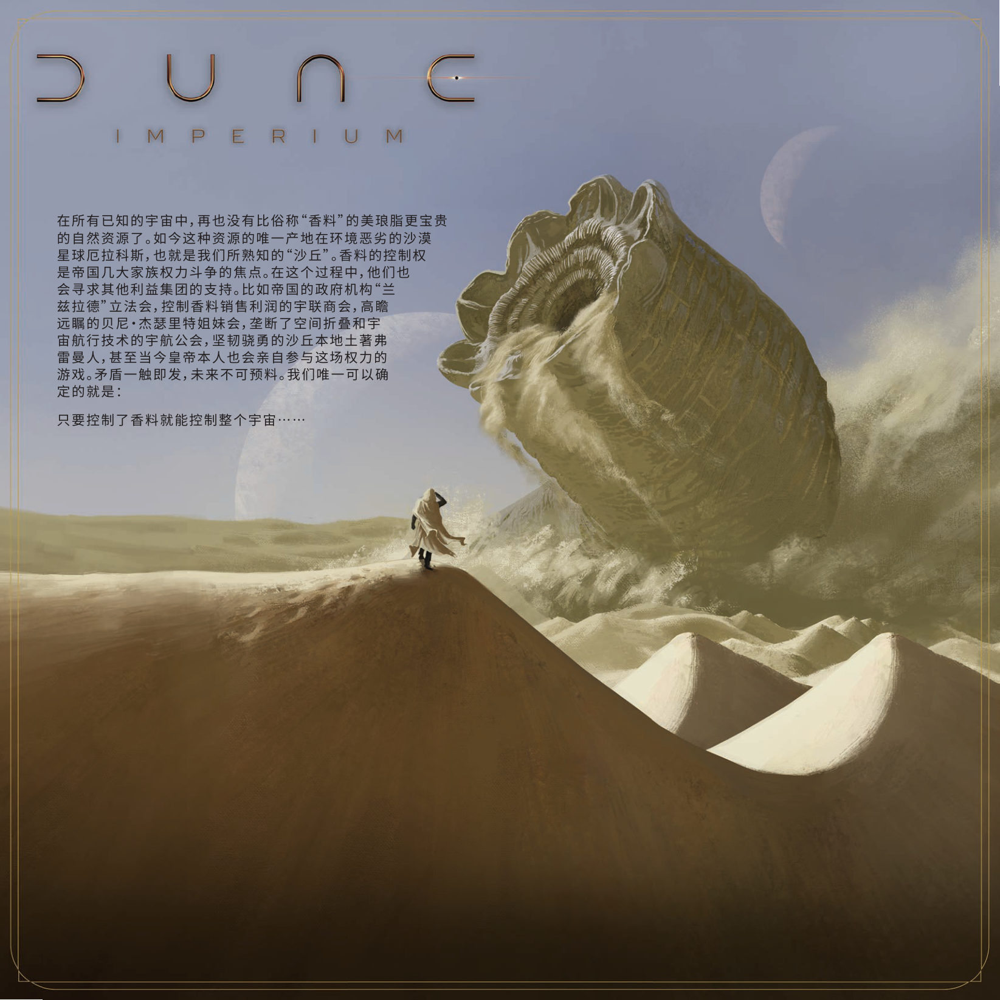
在所有已知的宇宙中，再也没有比俗称“香料”的美琅脂更宝贵的自然资源了。如今这种资源的唯一产地在环境恶劣的沙漠星球厄拉科斯，也就是我们所熟知的“沙丘”。香料的控制权是帝国几大家族权力斗争的焦点。在这个过程中，他们也会寻求其他利益集团的支持。比如帝国的政府机构“兰兹拉德”立法会，控制香料销售利润的宇联商会，高瞻远瞩的贝尼·杰瑟里特姐妹会，垄断了空间折叠和宇宙航行技术的宇航公会，坚韧骁勇的沙丘本地土著弗雷曼人，甚至当今皇帝本人也会亲自参与这场权力的游戏。矛盾一触即发，未来不可预料。我们唯一可以确定的就是：
只要控制了香料就能控制整个宇宙……
帝国概览（第 2 页）
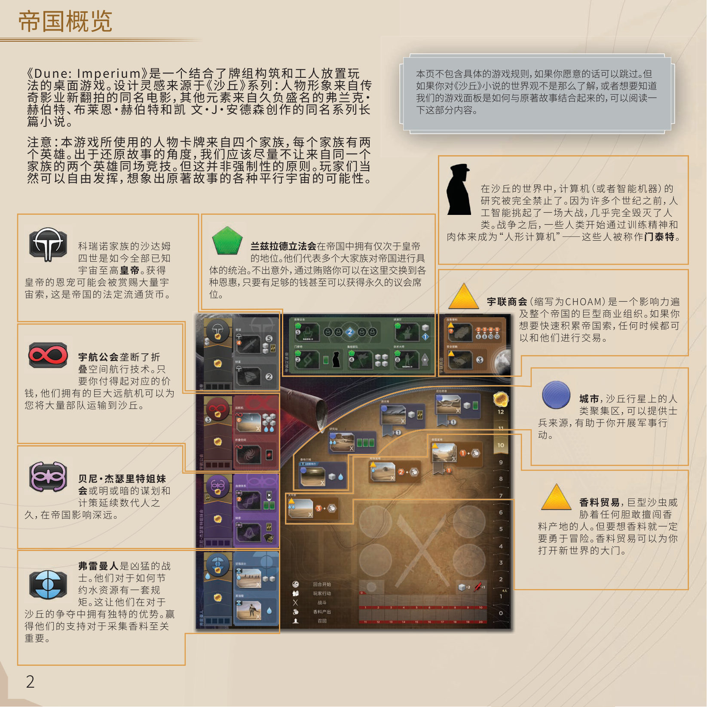
《Dune: Imperium》是一个结合了牌组构筑和工人放置玩法的桌面游戏。设计灵感来源于《沙丘》系列：人物形象来自传奇影业新翻拍的同名电影，其他元素来自久负盛名的弗兰克·赫伯特、布莱恩·赫伯特和凯文·J·安德森创作的同名系列长篇小说。
注意：本游戏所使用的人物卡牌来自四个家族，每个家族有两个英雄。出于还原故事的角度，我们应该尽量不让来自同一个家族的两个英雄同场竞技。但这并非强制性的原则。玩家们当然可以自由发挥，想象出原著故事的各种平行宇宙的可能性。
本页不包含具体的游戏规则，如果你愿意的话可以跳过。但如果你对《沙丘》小说的世界观不是那么了解，或者想要知道我们的游戏面板是如何与原著故事结合起来的，可以阅读一下这部分内容。
在沙丘的世界中，计算机（或者智能机器）的研究被完全禁止了。因为许多个世纪之前，人工智能挑起了一场大战，几乎完全毁灭了人类。战争之后，一些人类开始通过训练精神和肉体来成为“人形计算机”——这些人被称作门泰特。
科瑞诺家族的沙达姆四世是如今全部已知宇宙至高皇帝。获得皇帝的恩宠可能会被赏赐大量宇宙索〔原书如此，他处均作「帝国索」〕，这是帝国的法定流通货币。
兰兹拉德立法会在帝国中拥有仅次于皇帝的地位。他们代表多个大家族对帝国进行具体的统治。不出意外，通过贿赂你可以在这里交换到各种恩惠，只要有足够的钱甚至可以获得永久的议会席位。
宇联商会（缩写为CHOAM）是一个影响力遍及整个帝国的巨型商业组织。如果你想要快速积累帝国索，任何时候都可以和他们进行交易。
宇航公会垄断了折叠空间航行技术。只要你付得起对应的价钱，他们拥有的巨大远航机可以为您将大量部队运输到沙丘。
城市，沙丘行星上的人类聚集区，可以提供士兵来源，有助于你开展军事行动。
贝尼·杰瑟里特姐妹会或明或暗的谋划和计策延续数代人之久，在帝国影响深远。
香料贸易，巨型沙虫威胁着任何胆敢擅闯香料产地的人。但要想香料就一定要勇于冒险。香料贸易可以为你打开新世界的大门。
弗雷曼人是凶猛的战士。他们对于如何节约水资源有一套规矩。这让他们在对于沙丘的争夺中拥有独特的优势。赢得他们的支持对于采集香料至关重要。
游戏组件（第 3 页）
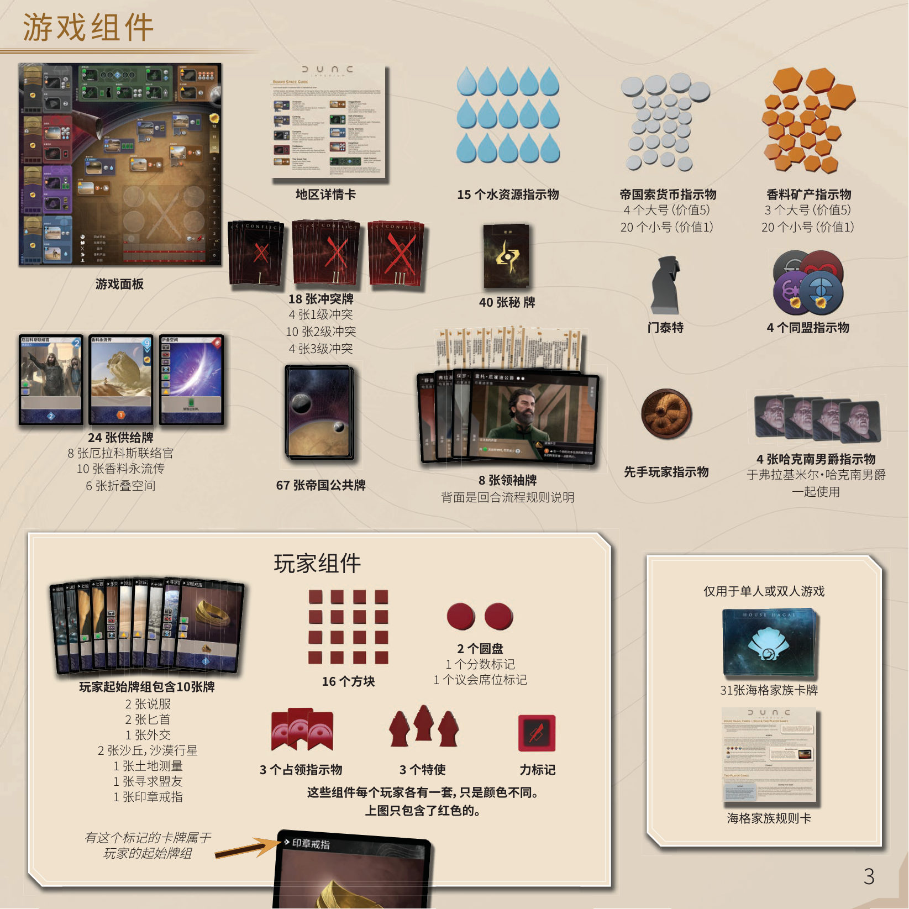
- 游戏面板
- 地区详情卡
- 15 个水资源指示物
- 帝国索货币指示物
- 4 个大号（价值5）
- 20 个小号（价值1）
- 香料矿产指示物
- 3 个大号（价值5）
- 20 个小号（价值1）
- 18 张冲突牌
- 4 张1级冲突
- 10 张2级冲突
- 4 张3级冲突
- 40 张秘牌
- 门泰特
- 4 个同盟指示物
- 24 张供给牌
- 8 张厄拉科斯联络官
- 10 张香料永流传
- 6 张折叠空间
- 67 张帝国公共牌
- 8 张领袖牌
- 背面是回合流程规则说明
- 先手玩家指示物
- 4 张哈克南男爵指示物
- 于弗拉基米尔·哈克南男爵一起使用〔原书如此〕
玩家组件
玩家起始牌组包含10张牌
- 2 张说服
- 2 张匕首
- 1 张外交
- 2 张沙丘，沙漠行星
- 1 张土地测量
- 1 张寻求盟友
- 1 张印章戒指
16 个方块
2 个圆盘
- 1 个分数标记
- 1 个议会席位标记
3 个占领指示物
3 个特使
力标记
这些组件每个玩家各有一套，只是颜色不同。上图只包含了红色的。
有这个标记的卡牌属于玩家的起始牌组
仅用于单人或双人游戏
31 张海格家族卡牌
海格家族规则卡
开局配置（第 4–5 页）
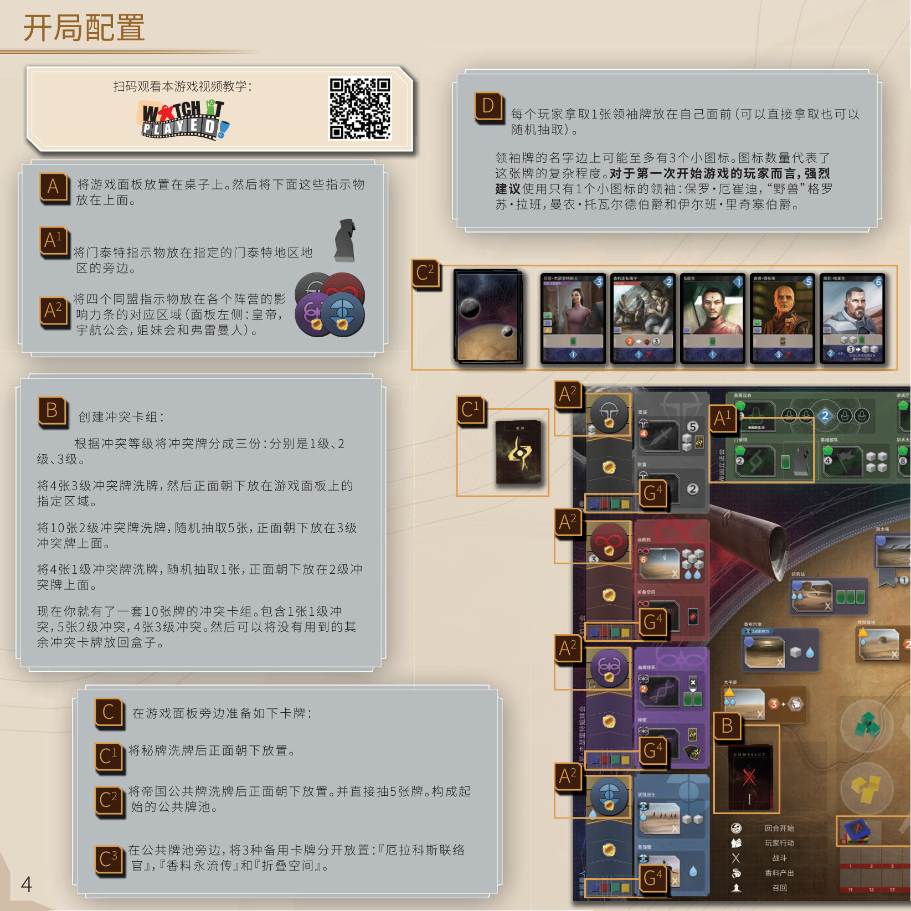
扫码观看本游戏视频教学：
A 将游戏面板放置在桌子上。然后将下面这些指示物放在上面。
A¹ 将门泰特指示物放在指定的门泰特地区地区的旁边。〔原书如此〕
A² 将四个同盟指示物放在各个阵营的影响力条的对应区域（面板左侧：皇帝，宇航公会，姐妹会和弗雷曼人）。
B 创建冲突卡组：
根据冲突等级将冲突牌分成三份：分别是1级、2级、3级。
将4张3级冲突牌洗牌，然后正面朝下放在游戏面板上的指定区域。
将10张2级冲突牌洗牌，随机抽取5张，正面朝下放在3级冲突牌上面。
将4张1级冲突牌洗牌，随机抽取1张，正面朝下放在2级冲突牌上面。
现在你就有了一套10张牌的冲突卡组。包含1张1级冲突，5张2级冲突，4张3级冲突。然后可以将没有用到的其余冲突卡牌放回盒子。
C 在游戏面板旁边准备如下卡牌：
C¹ 将秘牌洗牌后正面朝下放置。
C² 将帝国公共牌洗牌后正面朝下放置。并直接抽5张牌。构成起始的公共牌池。
C³ 在公共牌池旁边，将3种备用卡牌分开放置：『厄拉科斯联络官』，『香料永流传』和『折叠空间』。
D 每个玩家拿取1张领袖牌放在自己面前（可以直接拿取也可以随机抽取）。
领袖牌的名字边上可能至多有3个小图标。图标数量代表了这张牌的复杂程度。对于第一次开始游戏的玩家而言，强烈建议使用只有1个小图标的领袖：保罗·厄崔迪，"野兽"格罗苏·拉班，曼农·托瓦尔德伯爵和伊尔班·里奇塞伯爵。
【C¹ 配图：秘牌】
【C² 配图：帝国公共牌牌库与抽出的 5 张牌】
【版图示意图，标注：A¹（1 处）、A²（4 处）、B（1 处）、G⁴（4 处）】
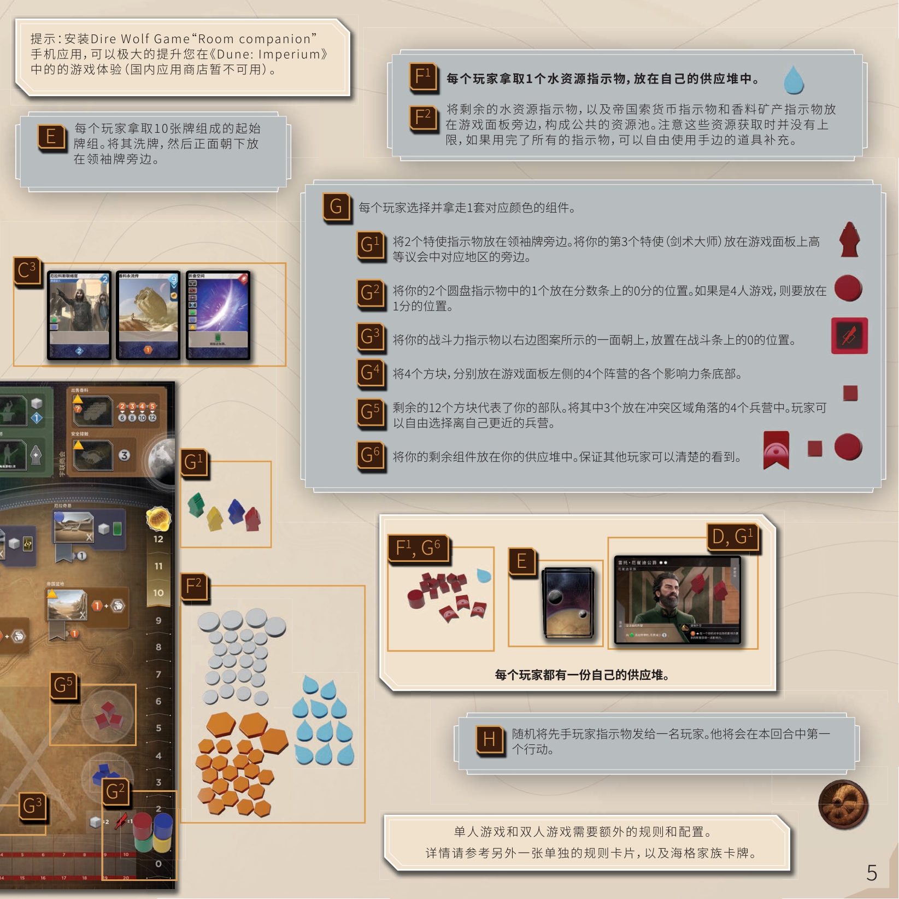
游戏概述和名词解释（第 6 页）
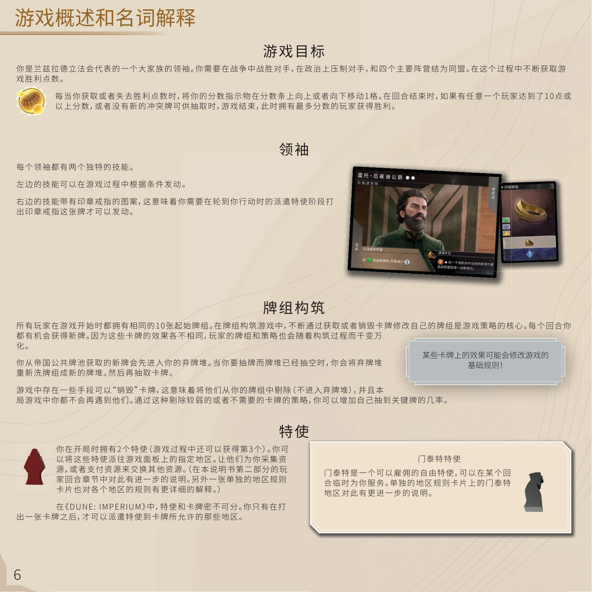
游戏目标
你是兰兹拉德立法会代表的一个大家族的领袖。你需要在战争中战胜对手，在政治上压制对手，和四个主要阵营结为同盟。在这个过程中不断获取游戏胜利点数。
每当你获取或者失去胜利点数时，将你的分数指示物在分数条上向上或者向下移动1格。在回合结束时，如果有任意一个玩家达到了10点或以上分数，或者没有新的冲突牌可供抽取时，游戏结束，此时拥有最多分数的玩家获得胜利。
领袖
每个领袖都有两个独特的技能。
左边的技能可以在游戏过程中根据条件发动。
右边的技能带有印章戒指的图案，这意味着你需要在轮到你行动时的派遣特使阶段打出印章戒指这张牌才可以发动。
〔右侧实拍图：雷托·厄崔迪公爵领袖牌及其配套的印章戒指牌〕
牌组构筑
所有玩家在游戏开始时都拥有相同的10张起始牌组。在牌组构筑游戏中，不断通过获取或者销毁卡牌修改自己的牌组是游戏策略的核心。每个回合你都有机会获得新牌。因为这些卡牌的效果各不相同，玩家的牌组和策略也会随着构筑过程而千变万化。
某些卡牌上的效果可能会修改游戏的基础规则！
你从帝国公共牌池获取的新牌会先进入你的弃牌堆。当你要抽牌而牌堆已经抽空时，你会将弃牌堆重新洗牌组成新的牌堆。然后再抽取卡牌。
游戏中存在一些手段可以“销毁”卡牌，这意味着将他们从你的牌组中剔除（不进入弃牌堆），并且本局游戏中你都不会再遇到他们。通过这种剔除较弱的或者不需要的卡牌的策略，你可以增加自己抽到关键牌的几率。
特使
你在开局时拥有2个特使（游戏过程中还可以获得第3个）。你可以将这些特使派往游戏面板上的指定地区。让他们为你采集资源，或者支付资源来交换其他资源。（在本说明书第二部分的玩家回合章节中对此有进一步的说明。另外一张单独的地区规则卡片也对各个地区的规则有更详细的解释。）
在《DUNE: IMPERIUM》中，特使和卡牌密不可分。你只有在打出一张卡牌之后，才可以派遣特使到卡牌所允许的那些地区。
门泰特特使
门泰特是一个可以雇佣的自由特使，可以在某个回合临时为你服务。单独的地区规则卡片上的门泰特地区对此有更进一步的说明。
阵营与秘牌（第 7 页）
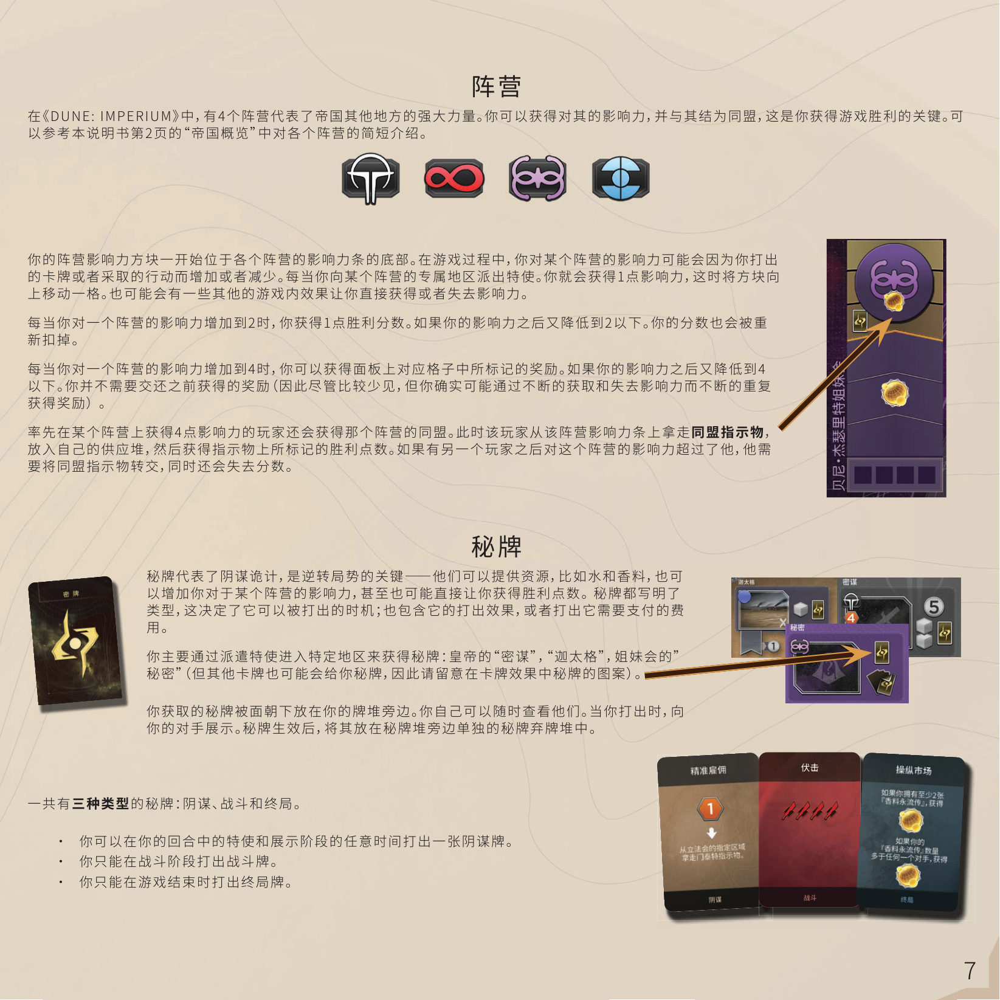
在《DUNE: IMPERIUM》中，有4个阵营代表了帝国其他地方的强大力量。你可以获得对其的影响力，并与其结为同盟，这是你获得游戏胜利的关键。可以参考本说明书第2页的“帝国概览”中对各个阵营的简短介绍。
你的阵营影响力方块一开始位于各个阵营的影响力条的底部。在游戏过程中，你对某个阵营的影响力可能会因为你打出的卡牌或者采取的行动而增加或者减少。每当你向某个阵营的专属地区派出特使。〔原书如此〕你就会获得1点影响力，这时将方块向上移动一格。也可能会有一些其他的游戏内效果让你直接获得或者失去影响力。
每当你对一个阵营的影响力增加到2时，你获得1点胜利分数。如果你的影响力之后又降低到2以下。〔原书如此〕你的分数也会被重新扣掉。
每当你对一个阵营的影响力增加到4时，你可以获得面板上对应格子中所标记的奖励。如果你的影响力之后又降低到4以下。〔原书如此〕你并不需要交还之前获得的奖励（因此尽管比较少见，但你确实可能通过不断的获取和失去影响力而不断的重复获得奖励）。
率先在某个阵营上获得4点影响力的玩家还会获得那个阵营的同盟。此时该玩家从该阵营影响力条上拿走同盟指示物，放入自己的供应堆，然后获得指示物上所标记的胜利点数。如果有另一个玩家之后对这个阵营的影响力超过了他，他需要将同盟指示物转交，同时还会失去分数。
秘牌
秘牌代表了阴谋诡计，是逆转局势的关键⸺他们可以提供资源，比如水和香料，也可以增加你对于某个阵营的影响力，甚至也可能直接让你获得胜利点数。秘牌都写明了类型，这决定了它可以被打出的时机；也包含它的打出效果，或者打出它需要支付的费用。
你主要通过派遣特使进入特定地区来获得秘牌：皇帝的“密谋”，“迦太格”，姐妹会的“秘密”（但其他卡牌也可能会给你秘牌，因此请留意在卡牌效果中秘牌的图案）。
你获取的秘牌被面朝下放在你的牌堆旁边。你自己可以随时查看他们。当你打出时，向你的对手展示。秘牌生效后，将其放在秘牌堆旁边单独的秘牌弃牌堆中。
一共有三种类型的秘牌：阴谋、战斗和终局。
- 你可以在你的回合中的特使和展示阶段的任意时间打出一张阴谋牌。
- 你只能在战斗阶段打出战斗牌。
- 你只能在游戏结束时打出终局牌。
回合流程（第 8 页）
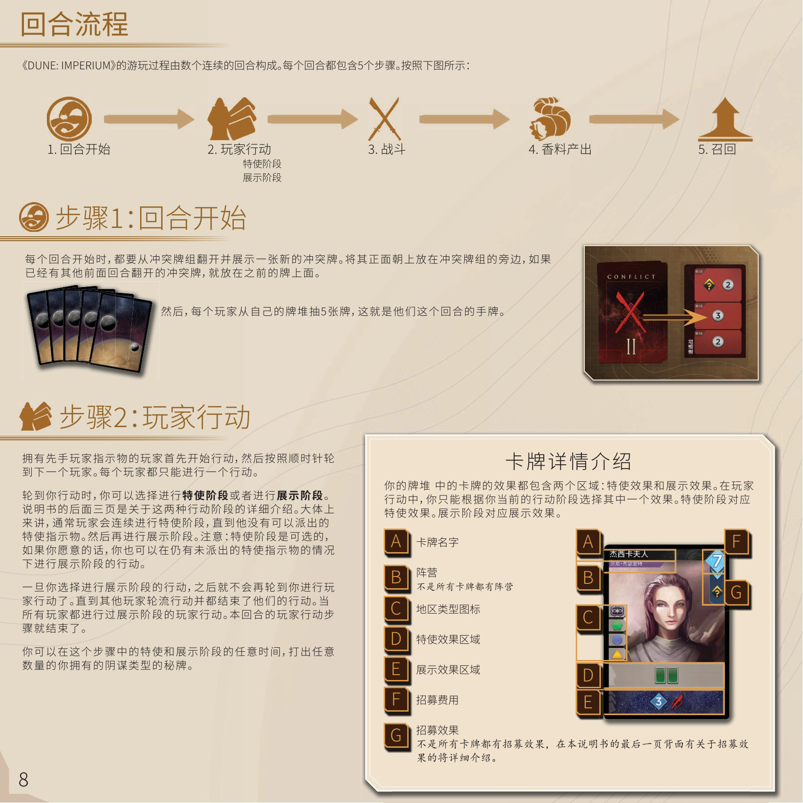
《DUNE: IMPERIUM》的游玩过程由数个连续的回合构成。每个回合都包含5个步骤。按照下图所示：
- 回合开始
- 玩家行动
- 特使阶段
- 展示阶段
- 战斗
- 香料产出
- 召回
步骤1：回合开始
每个回合开始时，都要从冲突牌组翻开并展示一张新的冲突牌。将其正面朝上放在冲突牌组的旁边，如果已经有其他前面回合翻开的冲突牌，就放在之前的牌上面。
然后，每个玩家从自己的牌堆抽5张牌，这就是他们这个回合的手牌。
步骤2：玩家行动
拥有先手玩家指示物的玩家首先开始行动，然后按照顺时针轮到下一个玩家。每个玩家都只能进行一个行动。
轮到你行动时，你可以选择进行特使阶段或者进行展示阶段。说明书的后面三页是关于这两种行动阶段的详细介绍。大体上来讲，通常玩家会连续进行特使阶段，直到他没有可以派出的特使指示物。然后再进行展示阶段。注意：特使阶段是可选的，如果你愿意的话，你也可以在仍有未派出的特使指示物的情况下进行展示阶段的行动。
一旦你选择进行展示阶段的行动，之后就不会再轮到你进行玩家行动了。直到其他玩家轮流行动并都结束了他们的行动。当所有玩家都进行过展示阶段的玩家行动。〔原书如此〕本回合的玩家行动步骤就结束了。
你可以在这个步骤中的特使和展示阶段的任意时间，打出任意数量的你拥有的阴谋类型的秘牌。
卡牌详情介绍
你的牌堆中的卡牌的效果都包含两个区域：特使效果和展示效果。在玩家行动中，你只能根据你当前的行动阶段选择其中一个效果。特使阶段对应特使效果。展示阶段对应展示效果。
- A 卡牌名字
- B 阵营
- 不是所有卡牌都有阵营
- C 地区类型图标
- D 特使效果区域
- E 展示效果区域
- F 招募费用
- G 招募效果
- 不是所有卡牌都有招募效果，在本说明书的最后一页背面有关于招募效果的将详细介绍。〔原书如此〕
玩家行动 · 特使阶段（第 9 页）
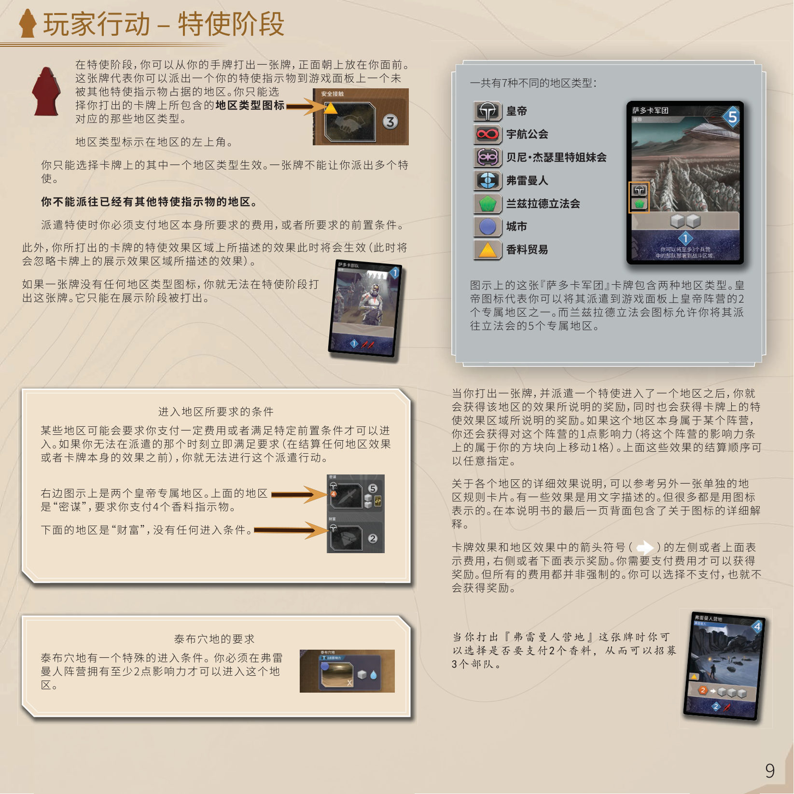
在特使阶段，你可以从你的手牌打出一张牌，正面朝上放在你面前。这张牌代表你可以派出一个你的特使指示物到游戏面板上一个未被其他特使指示物占据的地区。你只能选择你打出的卡牌上所包含的地区类型图标对应的那些地区类型。
[插图：游戏面板上的地区图示，箭头指向其左上角的"地区类型图标"]
地区类型标示在地区的左上角。
你只能选择卡牌上的其中一个地区类型生效。一张牌不能让你派出多个特使。
你不能派往已经有其他特使指示物的地区。
派遣特使时你必须支付地区本身所要求的费用，或者所要求的前置条件。此外，你所打出的卡牌的特使效果区域上所描述的效果此时将会生效（此时将会忽略卡牌上的展示效果区域所描述的效果）。
如果一张牌没有任何地区类型图标，你就无法在特使阶段打出这张牌。它只能在展示阶段被打出。
[插图：一张没有地区类型图标的卡牌，它只能在展示阶段被打出]
一共有7种不同的地区类型：
- 皇帝
- 宇航公会
- 贝尼·杰瑟里特姐妹会
- 弗雷曼人
- 兰兹拉德立法会
- 城市
- 香料贸易
[插图：『萨多卡军团』卡牌，图示中框出了它所包含的两种地区类型图标]
图示上的这张『萨多卡军团』卡牌包含两种地区类型。皇帝图标代表你可以将其派遣到游戏面板上皇帝阵营的2个专属地区之一。而兰兹拉德立法会图标允许你将其派往立法会的5个专属地区。
当你打出一张牌，并派遣一个特使进入了一个地区之后，你就会获得该地区的效果所说明的奖励，同时也会获得卡牌上的特使效果区域所说明的奖励。如果这个地区本身属于某个阵营，你还会获得对这个阵营的1点影响力（将这个阵营的影响力条上的属于你的方块向上移动1格）。上面这些效果的结算顺序可以任意指定。
关于各个地区的详细效果说明，可以参考另外一张单独的地区规则卡片。有一些效果是用文字描述的。但很多都是用图标表示的。在本说明书的最后一页背面包含了关于图标的详细解释。
卡牌效果和地区效果中的箭头符号（→）的左侧或者上面表示费用，右侧或者下面表示奖励。你需要支付费用才可以获得奖励。但所有的费用都并非强制的。你可以选择不支付，也就不会获得奖励。
当你打出『弗雷曼人营地』这张牌时你可以选择是否要支付2个香料，从而可以招募3个部队。
[插图：『弗雷曼人营地』卡牌]
进入地区所要求的条件
某些地区可能会要求你支付一定费用或者满足特定前置条件才可以进入。如果你无法在派遣的那个时刻立即满足要求（在结算任何地区效果或者卡牌本身的效果之前），你就无法进行这个派遣行动。
右边图示上是两个皇帝专属地区。上面的地区是“密谋”，要求你支付4个香料指示物。下面的地区是“财富”，没有任何进入条件。
[插图：两个皇帝专属地区——上面的“密谋”，要求支付4个香料指示物；下面的“财富”，没有任何进入条件]
泰布穴地的要求
泰布穴地有一个特殊的进入条件。你必须在弗雷曼人阵营拥有至少2点影响力才可以进入这个地区。
[插图：泰布穴地地区图示]
特使阶段（续）· 部署部队与控制地区（第 10 页）
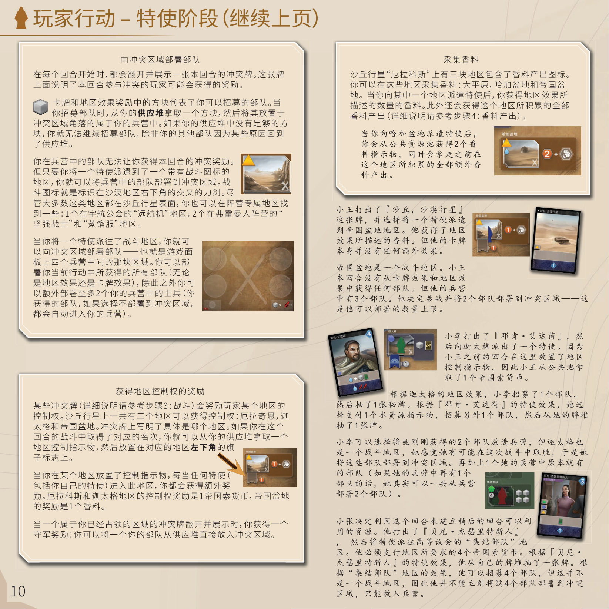
向冲突区域部署部队
在每个回合开始时，都会翻开并展示一张本回合的冲突牌。这张牌上面说明了本回合参与冲突的玩家可能会获得的奖励。
卡牌和地区效果奖励中的方块代表了你可以招募的部队。当你招募部队时，从你的供应堆拿取一个方块，然后将其放置于冲突区域角落的属于你的兵营中。如果你的供应堆中没有足够的方块，你就无法继续招募部队，除非你的其他部队因为某些原因回到了供应堆。
你在兵营中的部队无法让你获得本回合的冲突奖励。但只要你将一个特使派遣到了一个带有战斗图标的地区，你就可以将兵营中的部队部署到冲突区域。战斗图标就是标识在沙漠地区右下角的交叉的刀剑。尽管大多数这类地区都在沙丘行星表面，你也可以在阵营专属地区找到一些：1个在宇航公会的“远航机”地区，2个在弗雷曼人阵营的“坚强战士”和“蒸馏服”地区。
[插图：一个带有战斗图标的地区，战斗图标即右下角交叉的刀剑]
当你将一个特使派往了战斗地区，你就可以向冲突区域部署部队⸺也就是游戏面板上四个兵营中间的那块区域。你可以部署你当前行动中所获得的所有部队（无论是地区效果还是卡牌效果），除此之外你可以额外部署至多2个你的兵营中的士兵（你获得的部队，如果选择不部署到冲突区域，都会自动进入你的兵营）。
[插图：游戏面板上的冲突区域，位于四个兵营中间]
获得地区控制权的奖励
某些冲突牌（详细说明请参考步骤3：战斗）会奖励玩家某个地区的控制权。沙丘行星上一共有三个地区可以获得控制权：厄拉奇恩，迦太格和帝国盆地。冲突牌上写明了具体是哪个地区。如果你在这个回合的战斗中取得了对应的名次，你就可以从你的供应堆拿取一个地区控制指示物，然后放置在对应的地区左下角的旗子标志上。
[插图：地区图示，箭头指向其左下角的旗子标志]
当你在某个地区放置了控制指示物，每当任何特使（包括你自己的特使）进入此地区，你都会获得额外奖励。厄拉科斯和迦太格地区的控制权奖励是1帝国索货币，帝国盆地的奖励是1个香料。
当一个属于你已经占领的区域的冲突牌翻开并展示时，你获得一个守军奖励：你可以将一个你的部队从供应堆直接放入冲突区域。
采集香料
沙丘行星“厄拉科斯”上有三块地区包含了香料产出图标。你可以在这些地区采集香料：大平原，哈加盆地和帝国盆地。当你向其中一个地区派遣特使后，你获得地区效果所描述的数量的香料。此外还会获得这个地区所积累的全部香料产出（详细说明请参考步骤4：香料产出）。
当你向哈加盆地派遣特使后，你会从公共资源池获得2个香料指示物，同时会拿走之前在这个地区所积累的全部额外香料产出。
[插图：哈加盆地地区图示]
小王打出了『沙丘，沙漠行星』这张牌，并选择将一个特使派遣到帝国盆地地区。他获得了地区效果所描述的香料。但他的卡牌本身并没有任何额外效果。
[插图：帝国盆地地区与『沙丘，沙漠行星』卡牌]
帝国盆地是一个战斗地区。小王本回合没有从卡牌效果和地区效果中获得任何部队。但他的兵营中有3个部队。他决定参战并将2个部队部署到冲突区域——这是他可以部署的数量上限。
小李打出了『邓肯·艾达荷』，然后向迦太格派出了一个特使。因为小王之前的回合在这里放置了地区控制指示物，因此小王从公共池拿取了1个帝国索货币。
[插图：『邓肯·艾达荷』卡牌与迦太格地区]
根据迦太格的地区效果，小李招募了1个部队，然后抽了1张秘牌〔原书如此〕。根据『邓肯·艾达荷』的特使效果，她选择支付1个水资源指示物，招募另外1个部队，然后从她的牌堆抽了1张牌。
小李可以选择将她刚刚获得的2个部队放进兵营，但迦太格也是一个战斗地区，她感觉她有可能在这次战斗中取胜，于是她将这些部队部署到冲突区域。再加上1个她的兵营中原本就有的部队（如果她的兵营中再有1个部队的话，她其实可以一共从兵营部署2个部队）。
[插图：兵营中的部队]
小张决定利用这个回合来建立稍后的回合可以利用的资源。他打出了『贝尼·杰瑟里特新人』，然后将特使派往高等议会的“集结部队”地区。他必须支付地区所要求的4个帝国索货币。根据『贝尼·杰瑟里特新人』的特使效果，他从自己的牌堆抽了一张牌。根据“集结部队”地区的效果，他可以招募4个部队，但这并不是一个战斗地区，因此他并不能立刻将这4个部队部署到冲突区域，只能放入兵营。
[插图：『贝尼·杰瑟里特新人』卡牌]
玩家行动 · 展示阶段（第 11 页）
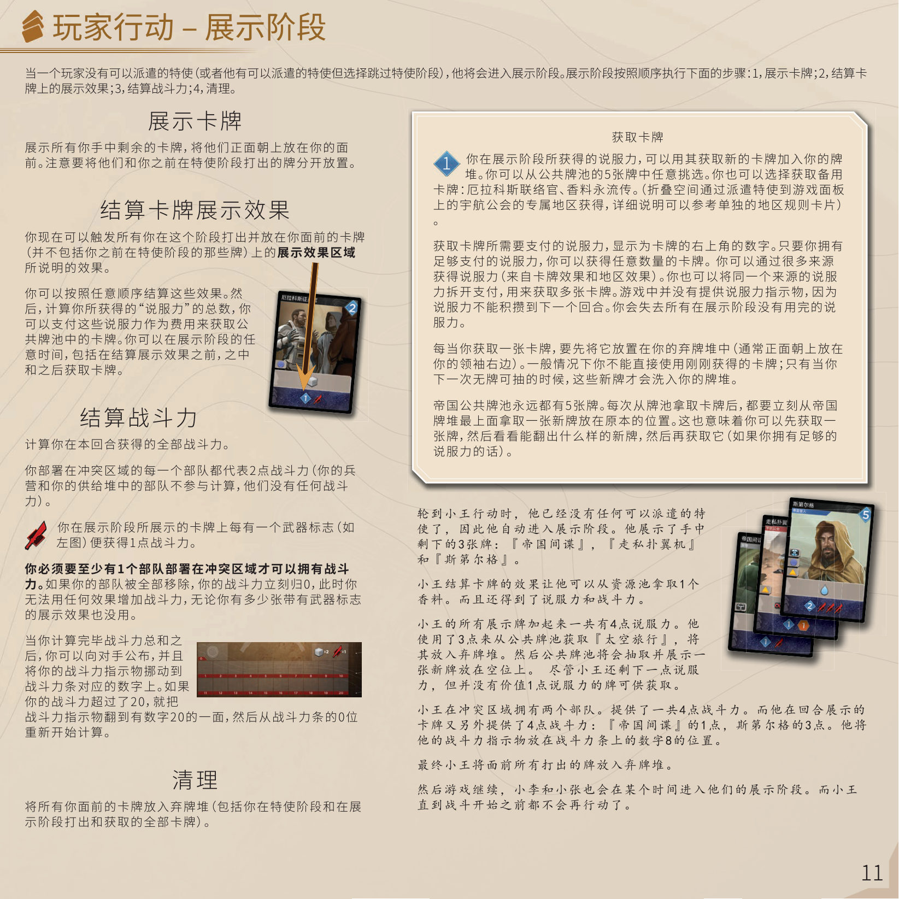
当一个玩家没有可以派遣的特使（或者他有可以派遣的特使但选择跳过特使阶段），他将会进入展示阶段。展示阶段按照顺序执行下面的步骤：1，展示卡牌；2，结算卡牌上的展示效果；3，结算战斗力；4，清理。
展示卡牌
展示所有你手中剩余的卡牌，将他们正面朝上放在你的面前。注意要将他们和你之前在特使阶段打出的牌分开放置。
结算卡牌展示效果
你现在可以触发所有你在这个阶段打出并放在你面前的卡牌（并不包括你之前在特使阶段的那些牌）上的展示效果区域所说明的效果。
你可以按照任意顺序结算这些效果。然后，计算你所获得的“说服力”的总数，你可以支付这些说服力作为费用来获取公共牌池中的卡牌。你可以在展示阶段的任意时间，包括在结算展示效果之前，之中和之后获取卡牌。
结算战斗力
计算你在本回合获得的全部战斗力。
你部署在冲突区域的每一个部队都代表2点战斗力（你的兵营和你的供给堆中的部队不参与计算，他们没有任何战斗力）。
- 你在展示阶段所展示的卡牌上每有一个武器标志（如左图）便获得1点战斗力。
你必须要至少有1个部队部署在冲突区域才可以拥有战斗力。如果你的部队被全部移除，你的战斗力立刻归0，此时你无法用任何效果增加战斗力，无论你有多少张带有武器标志的展示效果也没用。
当你计算完毕战斗力总和之后，你可以向对手公布，并且将你的战斗力指示物挪动到战斗力条对应的数字上。如果你的战斗力超过了20，就把战斗力指示物翻到有数字20的一面，然后从战斗力条的0位重新开始计算。
清理
将所有你面前的卡牌放入弃牌堆（包括你在特使阶段和在展示阶段打出和获取的全部卡牌）。
获取卡牌
你在展示阶段所获得的说服力，可以用其获取新的卡牌加入你的牌堆。你可以从公共牌池的5张牌中任意挑选。你也可以选择获取备用卡牌：厄拉科斯联络官、香料永流传。（折叠空间通过派遣特使到游戏面板上的宇航公会的专属地区获得，详细说明可以参考单独的地区规则卡片）
获取卡牌所需要支付的说服力，显示为卡牌的右上角的数字。只要你拥有足够支付的说服力，你可以获得任意数量的卡牌。你可以通过很多来源获得说服力（来自卡牌效果和地区效果）。你也可以将同一个来源的说服力拆开支付，用来获取多张卡牌。游戏中并没有提供说服力指示物，因为说服力不能积攒到下一个回合。你会失去所有在展示阶段没有用完的说服力。
每当你获取一张卡牌，要先将它放置在你的弃牌堆中（通常正面朝上放在你的领袖右边）。一般情况下你不能直接使用刚刚获得的卡牌；只有当你下一次无牌可抽的时候，这些新牌才会洗入你的牌堆。
帝国公共牌池永远都有5张牌。每次从牌池拿取卡牌后，都要立刻从帝国牌堆最上面拿取一张新牌放在原本的位置。这也意味着你可以先获取一张牌，然后看看能翻出什么样的新牌，然后再获取它（如果你拥有足够的说服力的话）。
示例
轮到小王行动时，他已经没有任何可以派遣的特使了，因此他自动进入展示阶段。他展示了手中剩下的3张牌：『帝国间谍』，『走私扑翼机』和『斯第尔格』。
小王结算卡牌的效果让他可以从资源池拿取1个香料。而且还得到了说服力和战斗力。
小王的所有展示牌加起来一共有4点说服力。他使用了3点来从公共牌池获取『太空旅行』，将其放入弃牌堆。然后公共牌池将会抽取并展示一张新牌放在空位上。尽管小王还剩下一点说服力，但并没有价值1点说服力的牌可供获取。
小王在冲突区域拥有两个部队。提供了一共4点战斗力。而他在回合展示的卡牌又另外提供了4点战斗力：『帝国间谍』的1点，斯第尔格的3点。他将他的战斗力指示物放在战斗力条上的数字8的位置。
最终小王将面前所有打出的牌放入弃牌堆。
然后游戏继续，小李和小张也会在某个时间进入他们的展示阶段。而小王直到战斗开始之前都不会再行动了。
步骤 3：战斗（第 12 页）
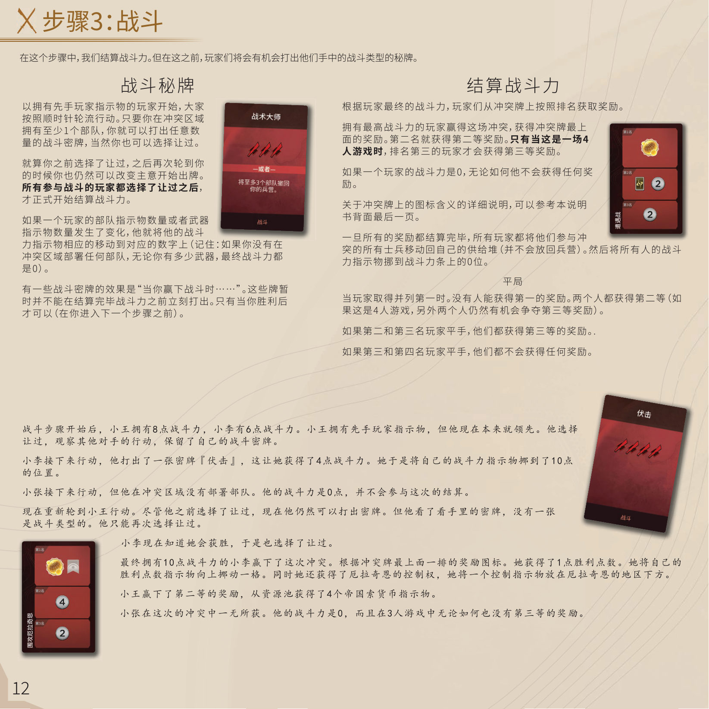
在这个步骤中，我们结算战斗力。但在这之前，玩家们将会有机会打出他们手中的战斗类型的秘牌。
战斗秘牌
以拥有先手玩家指示物的玩家开始，大家按照顺时针轮流行动。只要你在冲突区域拥有至少1个部队，你就可以打出任意数量的战斗密牌，当然你也可以选择让过。
就算你之前选择了让过，之后再次轮到你的时候你也仍然可以改变主意开始出牌。所有参与战斗的玩家都选择了让过之后，才正式开始结算战斗力。
如果一个玩家的部队指示物数量或者武器指示物数量发生了变化，他就将他的战斗力指示物相应的移动到对应的数字上（记住：如果你没有在冲突区域部署任何部队，无论你有多少武器，最终战斗力都是0）。
有一些战斗密牌的效果是“当你赢下战斗时……”。这些牌暂时并不能在结算完毕战斗力之前立刻打出。只有当你胜利后才可以（在你进入下一个步骤之前）。
结算战斗力
根据玩家最终的战斗力，玩家们从冲突牌上按照排名获取奖励。
拥有最高战斗力的玩家赢得这场冲突，获得冲突牌最上面的奖励。第二名就获得第二等奖励。只有当这是一场4人游戏时，排名第三的玩家才会获得第三等奖励。
如果一个玩家的战斗力是0，无论如何他不会获得任何奖励。
关于冲突牌上的图标含义的详细说明，可以参考本说明书背面最后一页。
一旦所有的奖励都结算完毕，所有玩家都将他们参与冲突的所有士兵移动回自己的供给堆（并不会放回兵营）。然后将所有人的战斗力指示物挪到战斗力条上的0位。
平局
当玩家取得并列第一时。没有人能获得第一的奖励。两个人都获得第二等（如果这是4人游戏，另外两个人仍然有机会争夺第三等奖励）。
如果第二和第三名玩家平手，他们都获得第三等的奖励。.〔原书如此〕
如果第三和第四名玩家平手，他们都不会获得任何奖励。
示例
战斗步骤开始后，小王拥有8点战斗力，小李有6点战斗力。小王拥有先手玩家指示物，但他现在本来就领先。他选择让过，观察其他对手的行动，保留了自己的战斗密牌。
小李接下来行动，他打出了一张密牌『伏击』，这让她获得了4点战斗力。她于是将自己的战斗力指示物挪到了10点的位置。
小张接下来行动，但他在冲突区域没有部署部队。他的战斗力是0点，并不会参与这次的结算。
现在重新轮到小王行动。尽管他之前选择了让过，现在他仍然可以打出密牌。但他看了看手里的密牌，没有一张是战斗类型的。他只能再次选择让过。
小李现在知道她会获胜，于是也选择了让过。
最终拥有10点战斗力的小李赢下了这次冲突。根据冲突牌最上面一排的奖励图标。她获得了1点胜利点数。她将自己的胜利点数指示物向上挪动一格。同时她还获得了厄拉奇恩的控制权，她将一个控制指示物放在厄拉奇恩的地区下方。
小王赢下了第二等的奖励，从资源池获得了4个帝国索货币指示物。
小张在这次的冲突中一无所获。他的战斗力是0，而且在3人游戏中无论如何也没有第三等的奖励。
步骤 4：香料产出 与 步骤 5：召回 · 疑难解答（第 13 页）
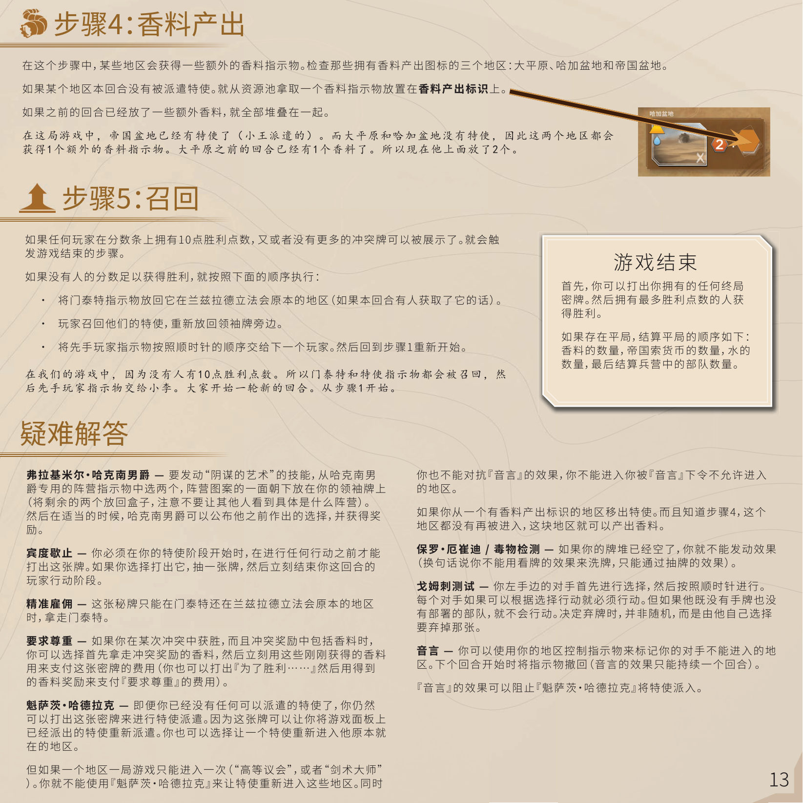
在这个步骤中，某些地区会获得一些额外的香料指示物。检查那些拥有香料产出图标的三个地区：大平原、哈加盆地和帝国盆地。
如果某个地区本回合没有被派遣特使。就从资源池拿取一个香料指示物放置在香料产出标识上。
如果之前的回合已经放了一些额外香料，就全部堆叠在一起。
在这局游戏中，帝国盆地已经有特使了（小王派遣的）。而大平原和哈加盆地没有特使，因此这两个地区都会获得1个额外的香料指示物。大平原之前的回合已经有1个香料了。所以现在他上面放了2个。
步骤5：召回
如果任何玩家在分数条上拥有10点胜利点数，又或者没有更多的冲突牌可以被展示了。就会触发游戏结束的步骤。
如果没有人的分数足以获得胜利，就按照下面的顺序执行：
- 将门泰特指示物放回它在兰兹拉德立法会原本的地区（如果本回合有人获取了它的话）。
- 玩家召回他们的特使，重新放回领袖牌旁边。
- 将先手玩家指示物按照顺时针的顺序交给下一个玩家。然后回到步骤1重新开始。
在我们的游戏中，因为没有人有10点胜利点数。所以门泰特和特使指示物都会被召回，然后先手玩家指示物交给小李。大家开始一轮新的回合。从步骤1开始。
游戏结束
首先，你可以打出你拥有的任何终局密牌。然后拥有最多胜利点数的人获得胜利。
如果存在平局，结算平局的顺序如下：香料的数量，帝国索货币的数量，水的数量，最后结算兵营中的部队数量。
疑难解答
弗拉基米尔·哈克南男爵 — 要发动“阴谋的艺术”的技能，从哈克南男爵专用的阵营指示物中选两个，阵营图案的一面朝下放在你的领袖牌上（将剩余的两个放回盒子，注意不要让其他人看到具体是什么阵营）。然后在适当的时候，哈克南男爵可以公布他之前作出的选择，并获得奖励。
宾度歇止 — 你必须在你的特使阶段开始时，在进行任何行动之前才能打出这张牌。如果你选择打出它，抽一张牌，然后立刻结束你这回合的玩家行动阶段。
精准雇佣 — 这张秘牌只能在门泰特还在兰兹拉德立法会原本的地区时，拿走门泰特。
要求尊重 — 如果你在某次冲突中获胜，而且冲突奖励中包括香料时，你可以选择首先拿走冲突奖励的香料，然后立刻用这些刚刚获得的香料用来支付这张密牌的费用（你也可以打出『为了胜利……』然后用得到的香料奖励来支付『要求尊重』的费用）。
魁萨茨·哈德拉克 — 即便你已经没有任何可以派遣的特使了，你仍然可以打出这张密牌来进行特使派遣。因为这张牌可以让你将游戏面板上已经派出的特使重新派遣。你也可以选择让一个特使重新进入他原本就在的地区。
但如果一个地区一局游戏只能进入一次（“高等议会”，或者“剑术大师”）。你就不能使用『魁萨茨·哈德拉克』来让特使重新进入这些地区。同时你也不能对抗『音言』的效果，你不能进入你被『音言』下令不允许进入的地区。
如果你从一个有香料产出标识的地区移出特使。而且知道〔原书如此〕步骤4，这个地区都没有再被进入，这块地区就可以产出香料。
保罗·厄崔迪 / 毒物检测 — 如果你的牌堆已经空了，你就不能发动效果（换句话说你不能用看牌的效果来洗牌，只能通过抽牌的效果）。
戈姆刺测试 — 你左手边的对手首先进行选择，然后按照顺时针进行。每个对手如果可以根据选择行动就必须行动。但如果他既没有手牌也没有部署的部队，就不会行动。决定弃牌时，并非随机，而是由他自己选择要弃掉那张。
音言 — 你可以使用你的地区控制指示物来标记你的对手不能进入的地区。下个回合开始时将指示物撤回（音言的效果只能持续一个回合）。
『音言』的效果可以阻止『魁萨茨·哈德拉克』将特使派入。
游戏玩法技巧（第 14 页）
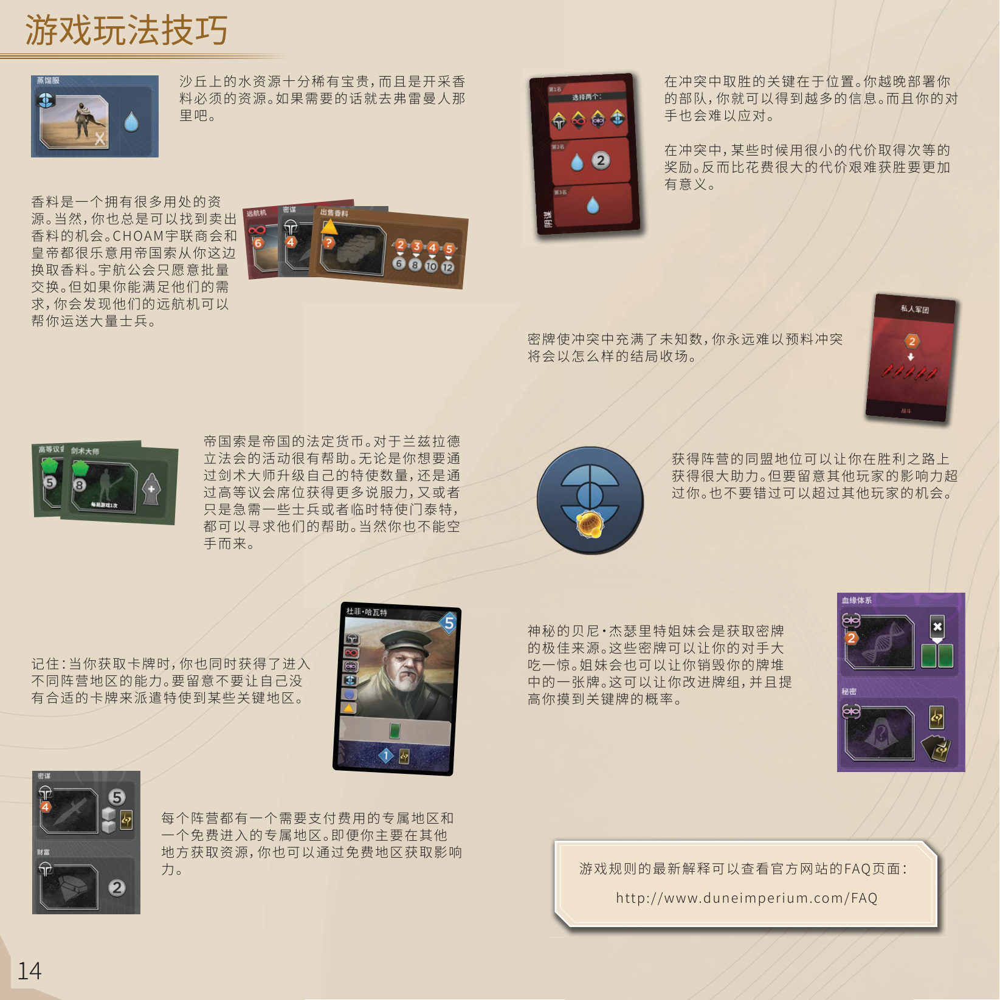
沙丘上的水资源十分稀有宝贵，而且是开采香料必须〔原书如此〕的资源。如果需要的话就去弗雷曼人那里吧。
在冲突中取胜的关键在于位置。你越晚部署你的部队，你就可以得到越多的信息。而且你的对手也会难以应对。
在冲突中，某些时候用很小的代价取得次等的奖励。反而比花费很大的代价艰难获胜要更加有意义。
香料是一个拥有很多用处的资源。当然，你也总是可以找到卖出香料的机会。CHOAM宇联商会和皇帝都很乐意用帝国索从你这边换取香料。宇航公会只愿意批量交换。但如果你能满足他们的需求，你会发现他们的远航机可以帮你运送大量士兵。
密牌使冲突中充满了未知数，你永远难以预料冲突将会以怎么样的结局收场。
帝国索是帝国的法定货币。对于兰兹拉德立法会的活动很有帮助。无论是你想要通过剑术大师升级自己的特使数量，还是通过高等议会席位获得更多说服力，又或者只是急需一些士兵或者临时特使门泰特，都可以寻求他们的帮助。当然你也不能空手而来。
获得阵营的同盟地位可以让你在胜利之路上获得很大助力。但要留意其他玩家的影响力超过你。也不要错过可以超过其他玩家的机会。
记住：当你获取卡牌时，你也同时获得了进入不同阵营地区的能力。要留意不要让自己没有合适的卡牌来派遣特使到某些关键地区。
神秘的贝尼·杰瑟里特姐妹会是获取密牌的极佳来源。这些密牌可以让你的对手大吃一惊。姐妹会也可以让你销毁你的牌堆中的一张牌。这可以让你改进牌组，并且提高你摸到关键牌的概率。
每个阵营都有一个需要支付费用的专属地区和一个免费进入的专属地区。即便你主要在其他地方获取资源，你也可以通过免费地区获取影响力。
游戏规则的最新解释可以查看官方网站的FAQ页面：
http://www.duneimperium.com/FAQ
版权信息（第 15 页）
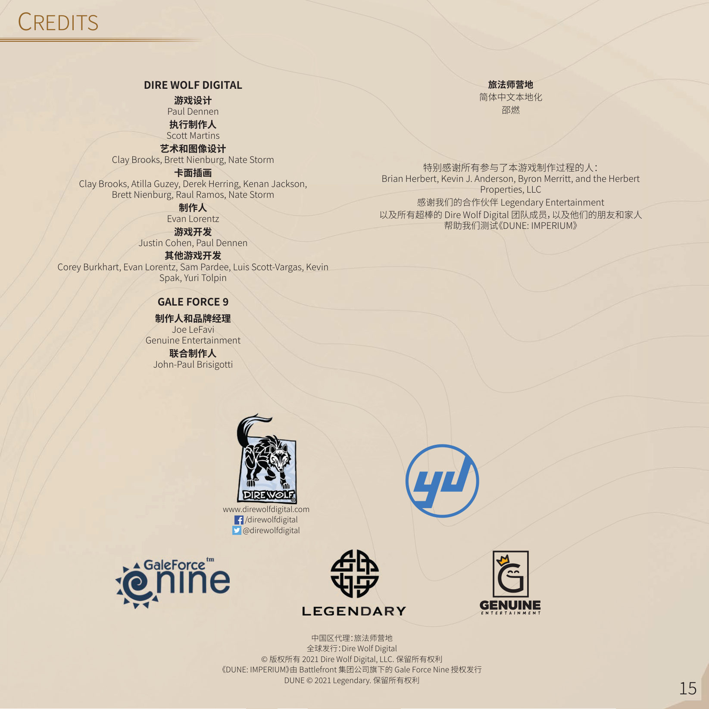
DIRE WOLF DIGITAL
游戏设计
Paul Dennen
执行制作人
Scott Martins
艺术和图像设计
Clay Brooks, Brett Nienburg, Nate Storm
卡面插画
Clay Brooks, Atilla Guzey, Derek Herring, Kenan Jackson, Brett Nienburg, Raul Ramos, Nate Storm
制作人
Evan Lorentz
游戏开发
Justin Cohen, Paul Dennen
其他游戏开发
Corey Burkhart, Evan Lorentz, Sam Pardee, Luis Scott-Vargas, Kevin Spak, Yuri Tolpin
GALE FORCE 9
制作人和品牌经理
Joe LeFavi
Genuine Entertainment
联合制作人
John-Paul Brisigotti
旅法师营地
简体中文本地化
邵燃
特别感谢所有参与了本游戏制作过程的人：
Brian Herbert, Kevin J. Anderson, Byron Merritt, and the Herbert Properties, LLC
感谢我们的合作伙伴 Legendary Entertainment
以及所有超棒的 Dire Wolf Digital 团队成员，以及他们的朋友和家人帮助我们测试《DUNE: IMPERIUM》
www.direwolfdigital.com
/direwolfdigital
@direwolfdigital
中国区代理：旅法师营地
全球发行：Dire Wolf Digital
© 版权所有 2021 Dire Wolf Digital, LLC. 保留所有权利
《DUNE: IMPERIUM》由 Battlefront 集团公司旗下的 Gale Force Nine 授权发行
DUNE © 2021 Legendary. 保留所有权利
图标和概念的解释（第 16 页）
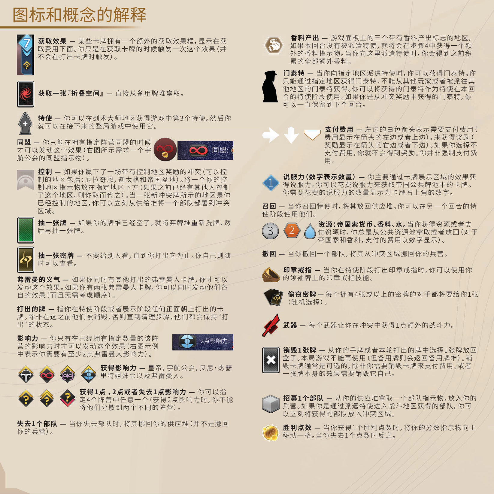
- 获取效果 — 某些卡牌拥有一个额外的获取效果框，显示在获取费用下面。你只是在获取卡牌的时候触发一次这个效果（并不会在打出卡牌时触发）。
- 获取一张『折叠空间』 — 直接从备用牌堆拿取。
- 特使 — 你可以在剑术大师地区获得游戏中第3个特使。然后你就可以在接下来的整局游戏中使用它。
- 同盟 — 你只能在拥有指定阵营同盟的时候才可以发动这个效果（右图所示需求一个宇航公会的同盟指示物）。
- 控制 — 如果你赢下了一场带有控制地区奖励的冲突（可以控制的地区包括：厄拉奇恩，迦太格和帝国盆地）。将一个你的控制地区指示物放在指定地区下方（如果之前已经有其他人控制了这个地区，则你取而代之）。当一张新冲突牌所示的地区是你已经控制的地区，你可以立刻从供给堆将一个部队部署到冲突区域。
- 抽一张牌 — 如果你的牌堆已经空了，就将弃牌堆重新洗牌，然后再抽一张牌。
- 抽一张密牌 — 不要给别人看，直到你打出它为止。你自己则随时可以查看。
- 弗雷曼的义气 — 如果你同时有其他打出的弗雷曼人卡牌，你才可以发动这个效果。如果你有两张弗雷曼人卡牌，你可以同时发动他们各自的效果（而且无需考虑顺序）。
- 打出的牌 — 指你在特使阶段或者展示阶段任何正面朝上打出的卡牌。除非在这之前他们被销毁，否则直到清理步骤，他们都会保持“打出”的状态。
- 影响力 — 你只有在已经拥有指定数量的该阵营的影响力时才可以发动这个效果（右图示例中表示你需要有至少2点弗雷曼人影响力）。
- 获得影响力 — 皇帝，宇航公会，贝尼·杰瑟里特姐妹会以及弗雷曼人。
- 获得1点 ，2点或者失去1点影响力 — 你可以指定4个阵营中任意一个（获得2点影响力时，你不能将他们分散到两个不同的阵营）。
- 失去1个部队 — 当你失去部队时，将其挪回你的供应堆（并不是挪回你的兵营）。
- 香料产出 — 游戏面板上的三个带有香料产出标志的地区，如果本回合没有被派遣特使，就将会在步骤4中获得一个额外的香料指示物。当你向这里派遣特使时，你会得到之前积累的全部额外香料。
- 门泰特 — 当你向指定地区派遣特使时，你可以获得门泰特。你只能通过指定地区获得门泰特，不能从其他玩家或者被派往其他地区的门泰特获得。你可以将获得的门泰特作为特使在本回合的特使阶段使用。如果你是从冲突奖励中获得的门泰特，你可以一直保留到下个回合。
- 支付费用 — 左边的白色箭头表示需要支付费用（费用显示在箭头的左边或者上边），来获得奖励（奖励显示在箭头的右边或者下边）。如果你选择不支付费用，你就不会得到奖励。你并非强制支付费用。
- 说服力(数字表示数量) — 你主要通过卡牌展示区域的效果获得说服力。你可以花费说服力来获取帝国公共牌池中的卡牌。你需要花费的说服力的数量显示为卡牌右上角的数字。
- 召回 — 当你召回特使时，将其放回供应堆。你可以在另一个回合的特使阶段使用他们。
- 资源：帝国索货币、香料、水。 当你获得资源或者支付资源时，你总是从公共资源池拿取或者放回（对于帝国索和香料，支付的费用以数字显示）。
- 撤回 — 当你撤回一个部队，将其从冲突区域挪回你的兵营。
- 印章戒指 — 当你在特使阶段打出印章戒指时，你可以使用你的领袖牌上的印章戒指技能。
- 偷窃密牌 — 每个拥有4张或以上的密牌的对手都将要给你1张（随机选择）。
- 武器 — 每个武器让你在冲突中获得1点额外的战斗力。
- 销毁1张牌 — 从你的手牌或者本轮打出的牌中选择1张牌放回盒子。本局游戏不能再使用（但备用牌则会返回备用牌堆）。销毁卡牌通常是可选的，除非你需要销毁卡牌来支付费用。或者一张牌本身的效果需要销毁它自己。
- 招募1个部队 — 从你的供应堆拿取一个部队指示物，放入你的兵营。如果你是通过派遣特使进入战斗地区获得的部队，你可以立刻将获得的部队放入冲突区域。
- 胜利点数 — 当你获得1个胜利点数时，将你的分数指示物向上移动一格。当你失去1个点数时反之。
补充规则 · 海格家族卡牌 — 单人和双人游戏
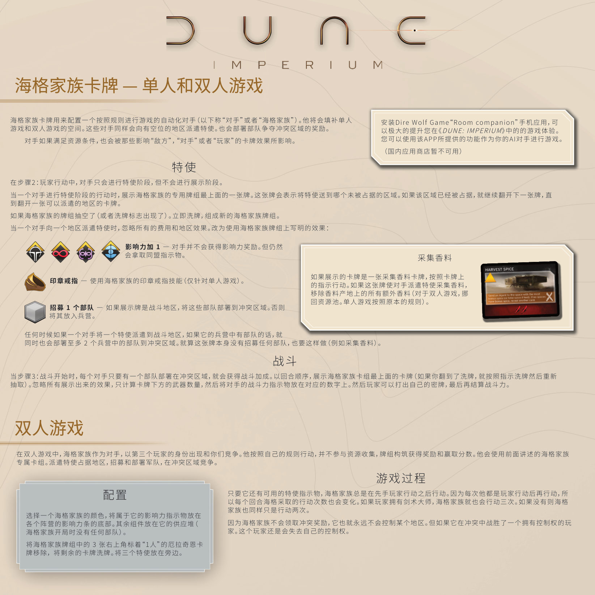
海格家族卡牌用来配置一个按照规则进行游戏的自动化对手（以下称“对手”或者“海格家族”）。他将会填补单人游戏和双人游戏的空间。这些对手同样会向有空位的地区派遣特使。也会部署部队争夺冲突区域的奖励。
对手如果满足资源条件，也会被那些影响“敌方”，“对手”或者“玩家”的卡牌效果所影响。
安装Dire Wolf Game“Room companion”手机应用，可以极大的提升您在《DUNE: IMPERIUM》中的的游戏体验〔原书如此〕。您可以使用该APP所提供的功能作为你的AI对手进行游戏。 （国内应用商店暂不可用）
特使
在步骤2：玩家行动中，对手只会进行特使阶段，但不会进行展示阶段。
当一个对手进行特使阶段的行动时，展示海格家族的专用牌组最上面的一张牌。这张牌会表示将特使送到哪个未被占据的区域。如果该区域已经被占据，就继续翻开下一张牌，直到翻开一张可以派遣的地区的卡牌。
如果海格家族的牌组抽空了（或者洗牌标志出现了）。立即洗牌，组成新的海格家族牌组。
当一个对手向一个地区派遣特使时，忽略所有的费用和地区效果。改为使用海格家族牌组上写明的效果：
- 影响力加 1 — 对手并不会获得影响力奖励。但仍然会拿取同盟指示物。
- 印章戒指 — 使用海格家族的印章戒指技能（仅针对单人游戏）。
- 招募 1 个部队 — 如果展示牌是战斗地区，将这些部队部署到冲突区域。否则将其放入兵营。
采集香料
如果展示的卡牌是一张采集香料卡牌，按照卡牌上的指示行动。如果这张牌使对手派遣特使采集香料，移除香料产地上的所有额外香料（对于双人游戏，挪回资源池。单人游戏按照原本的规则）。
任何时候如果一个对手将一个特使派遣到战斗地区，如果它的兵营中有部队的话，就同时也会部署至多 2 个兵营中的部队到冲突区域。就算这张牌本身没有招募任何部队，也要这样做（例如采集香料）。
战斗
当步骤3：战斗开始时，每个对手只要有一个部队部署在冲突区域，就会获得战斗加成。以回合顺序，展示海格家族卡组最上面的卡牌（如果你翻到了洗牌，就按照指示洗牌然后重新抽取）。忽略所有展示出来的效果，只计算卡牌下方的武器数量，然后将对手的战斗力指示物放在对应的数字上。然后玩家可以打出自己的密牌，最后再结算战斗力。
双人游戏
在双人游戏中，海格家族作为对手，以第三个玩家的身份出现和你们竞争。他按照自己的规则行动，并不参与资源收集，牌组构筑获得奖励和赢取分数。他会使用前面讲述的海格家族专属卡组。派遣特使占据地区，招募和部署军队，在冲突区域竞争。
游戏过程
只要它还有可用的特使指示物，海格家族总是在先手玩家行动之后行动。因为每次他都是玩家行动后再行动，所以每个回合海格采取的行动次数也会变化。如果玩家拥有剑术大师，海格家族就也会行动三次。如果没有则海格家族也同样只是行动两次。
因为海格家族不会领取冲突奖励，它也就永远不会控制某个地区。但如果它在冲突中战胜了一个拥有控制权的玩家。这个玩家还是会失去自己的控制权。〔原书如此〕
配置
选择一个海格家族的颜色，将属于它的影响力指示物放在各个阵营的影响力条的底部。其余组件放在它的供应堆（海格家族开局时没有任何部队）。
将海格家族牌组中的 3 张右上角标着“1人”的厄拉奇恩卡牌移除，将剩余的卡牌洗牌。将三个特使放在旁边。
单人游戏
在单人游戏中，你将会面对两个对手，它们没有自己的牌堆。但它们都会和你竞争阵营的影响力和香料的控制权。如果任意一个对手获得了10分或以上，就会触发游戏结束，而且你可能会输给它们！
配置
从右边的表格选择一个难度。
选择两个领袖。在本局游戏中，他们只会使用印章戒指技能，忽略掉左边的技能。单人游戏的对手不能选择“保罗·厄崔迪”和“海伦娜·里奇塞”，对于第一次玩单人游戏的人而言，推荐选择“曼农·托瓦尔德伯爵”和“‘野兽’格罗苏·拉班”。
为每个对手选择一个颜色。将属于它们的影响力指示物放在各个阵营的影响力条的底部。根据你的难度选择配置它们的兵营中的部队数量。将剩余部队放入它们的供应堆。将 2 个特使放入它们的供应堆。将剑术大师（第3个特使）插入冲突牌堆中间。上面盖着的冲突牌的数量由右侧的难度表格指定。
将海格家族牌组中右上角标着“2人”的卡牌移除（包括 1 张洗牌指示牌和 3 张厄拉奇恩卡牌），将剩余的卡牌洗牌。
如果你的难度有要求，就将 5 个帝国索货币指示物放在门泰特地区。这意味着这局游戏中的门泰特费用是 5 而不是2。
你和你的对手开局都拥有 1 点水资源。你选择的难度可能会提供额外的资源。.〔原书如此〕
你左手边的对手拥有先手玩家指示物。
难度
单人游戏配置方法根据难度而变化：
| 佣兵（新手） | 萨多卡（老手） | 门泰特（专家） | |
|---|---|---|---|
| 你拥有的额外开局资源 | 1 帝国索 1 香料 | — | — |
| 门泰特地区支付改为 5 | 否 | 是 | 是 |
| 对手在兵营开局拥有额外部队 | — | 3 | 3 |
| 对手的剑术大师上面的冲突牌数量 | 5 | 4 | 3 |
| 对手拥有的额外开局资源 | — | 1 张密牌 | 1 张密牌 |
魁萨茨·哈德拉克（超专家难度）：你不能获得剑术大师。
对手行动
在步骤2：玩家行动时，只要你的对手拥有可用的特使，它们也会轮流进行特使阶段。
当一个对手使用采集香料派遣特使的时候，它们获得那里全部的香料（包含额外产出的部分）。.〔原书如此〕
战斗
即便是那些它们正常情况下并不会收集的资源。对手仍然可以获得第一名和第二名的冲突奖励。
- 他们可以获得胜利点数和阵营影响力点数。
- 他们可以获得帝国索货币，香料，水和密牌。这些都会进入它们的供给堆。
- 他们可以控制游戏面板上的地区。放置他们的地区控制指示物。在未来的回合，他们也会获得进入此地区的特使带来的额外奖励。他们也会因为展示相同地区的冲突牌而获得防守加成，将一个部队从供给堆放入冲突区域。
- 他们可以获得门泰特并使用。
对手的额外规则
- 剑术大师 — 当你翻开了遮挡着对手的剑术大师的冲突牌之后。你的对手立刻获得他们的第三个特使，他们可以在当前回合以及之后的整局游戏使用。.〔原书如此〕
- 选择 — 每当一个对手需要做出选择时，他们会选择影响力最少的阵营。在存在多个相同选择时，你可以替对手做出选择。
- 『操纵市场』 — 在结算这张密牌的效果时，视为你的对手各自拥有 2 张『香料永流传』（意味着你需要拥有 3 张才可以获得 2 点胜利点数）。
- 专家模式部队部署 — 当选择专家模式时，你的对手会更加谨慎的使用部队。如果他们已经领先至少 2 个部队，他们不会在等级 1 和 2 的冲突牌上继续投入兵力（改为放入兵营）。对于等级 3 的冲突牌。对手会尽可能的投入全部兵力。
花费资源
当一个对手拥有下图所示的资源时，他们会立刻兑换为对应的奖励。
〔以下为四行图标兑换示意（原图为图标、无文字，数字取自原书）：三个深色方形资源图标 → 一枚金币；三滴水滴图标 → 一枚金币；标有“7”的灰色圆形指示物 → 一枚金币；标有“7”的橙色六边形指示物 → 一枚金币〕
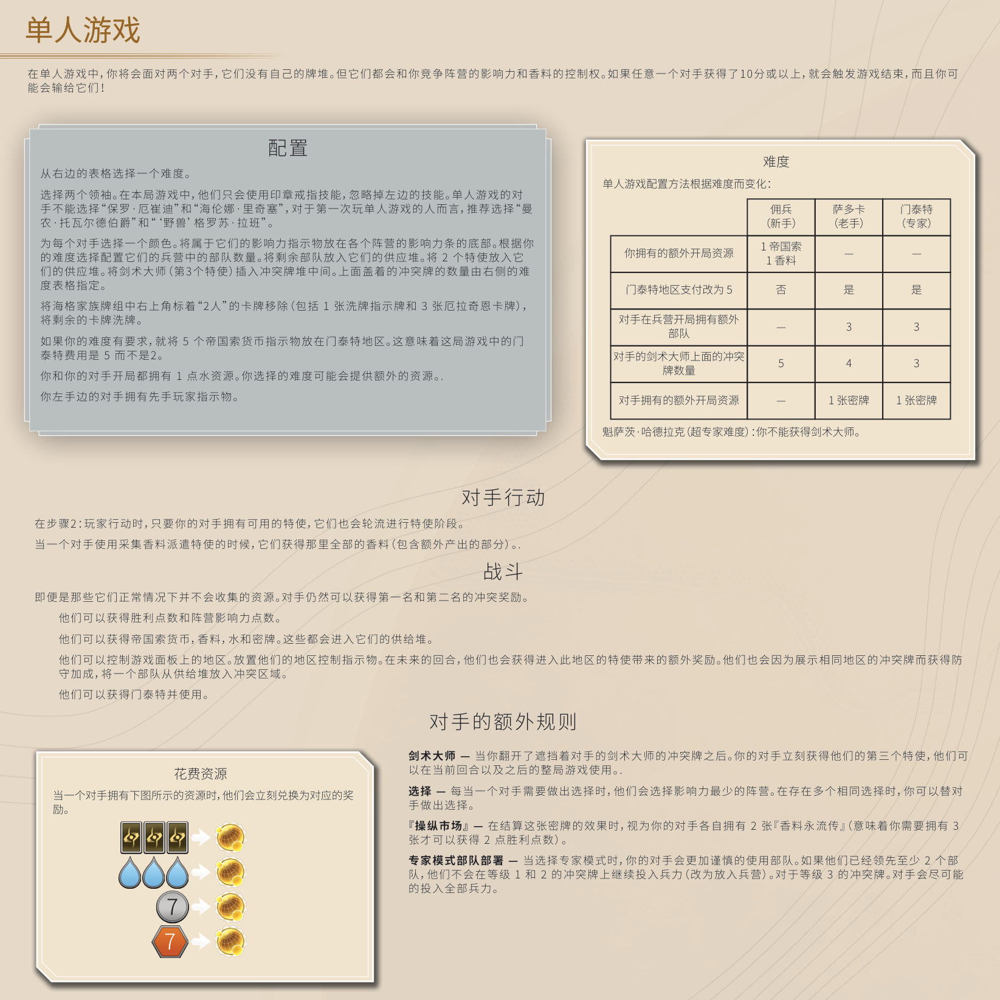
补充规则 · 地区说明
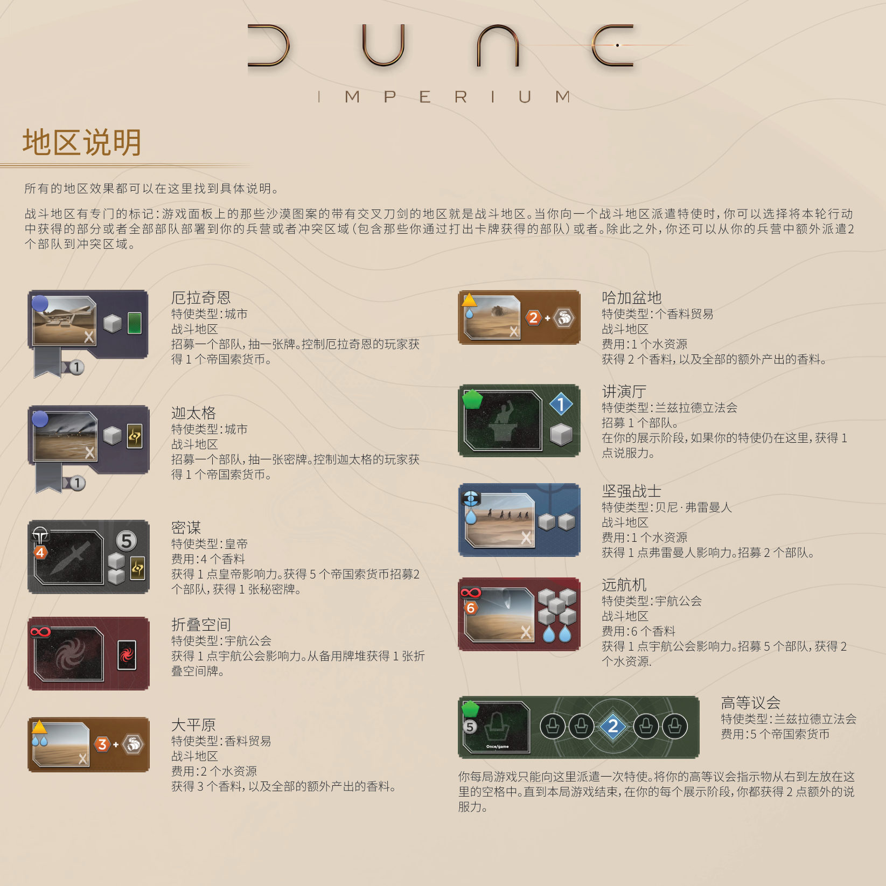
所有的地区效果都可以在这里找到具体说明。
战斗地区有专门的标记：游戏面板上的那些沙漠图案的带有交叉刀剑的地区就是战斗地区。当你向一个战斗地区派遣特使时，你可以选择将本轮行动中获得的部分或者全部部队部署到你的兵营或者冲突区域（包含那些你通过打出卡牌获得的部队）或者。〔原书如此〕除此之外，你还可以从你的兵营中额外派遣2个部队到冲突区域。
厄拉奇恩
特使类型：城市
战斗地区
招募一个部队，抽一张牌。控制厄拉奇恩的玩家获得 1 个帝国索货币。
迦太格
特使类型：城市
战斗地区
招募一个部队，抽一张密牌。控制迦太格的玩家获得 1 个帝国索货币。
密谋
特使类型：皇帝
费用：4 个香料
获得 1 点皇帝影响力。获得 5 个帝国索货币招募2 个部队〔原书如此，「招募」前脱标点〕，获得 1 张秘密牌。
折叠空间
特使类型：宇航公会
获得 1 点宇航公会影响力。从备用牌堆获得 1 张折叠空间牌。
大平原
特使类型：香料贸易
战斗地区
费用：2 个水资源
获得 3 个香料，以及全部的额外产出的香料。
哈加盆地
特使类型：个香料贸易〔原书如此〕
战斗地区
费用：1 个水资源
获得 2 个香料，以及全部的额外产出的香料。
讲演厅
特使类型：兰兹拉德立法会
招募 1 个部队。
在你的展示阶段，如果你的特使仍在这里，获得 1 点说服力。
坚强战士
特使类型：贝尼·弗雷曼人〔原书如此，坚强战士为弗雷曼人专属地区〕
战斗地区
费用：1 个水资源
获得 1 点弗雷曼人影响力。招募 2 个部队。
远航机
特使类型：宇航公会
战斗地区
费用：6 个香料
获得 1 点宇航公会影响力。招募 5 个部队，获得 2 个水资源.
高等议会
特使类型：兰兹拉德立法会
费用：5 个帝国索货币
你每局游戏只能向这里派遣一次特使。将你的高等议会指示物从右到左放在这里的空格中。直到本局游戏结束，在你的每个展示阶段，你都获得 2 点额外的说服力。
帝国盆地
特使类型：个香料贸易〔原书如此〕
战斗地区
获得 1 个香料，以及全部的额外产出的香料。控制帝国盆地的玩家获得 1 个香料。
门泰特
特使类型：兰兹拉德立法会
费用：2 个帝国索货币
抽一张牌。如果门泰特指示物还在这里。〔原书如此〕拿取它并放入你的供给堆。这个回合你可以将门泰特视为你的特使。在步骤5：召回时，将门泰特放回原处。
集结部队
特使类型：兰兹拉德立法会
费用：4 个帝国索货币
招募 4 个部队。
研究站
特使类型：城市
战斗地区
费用：2 个水资源
抽 3 张牌。
秘密
特使类型：贝尼·杰瑟里特姐妹会
获得 1 点贝尼·杰瑟里特姐妹会影响力。抽 1 张秘密牌。每个拥有4个或以上秘密牌的对手必须给你一张牌（随机选择）。
安全接触
特使类型：个香料贸易〔原书如此〕
获得 3 个帝国索货币。
血缘体系
特使类型：贝尼·杰瑟里特姐妹会
费用：2 个香料
获得 1 点贝尼·杰瑟里特姐妹会影响力。销毁 1 张卡牌，抽取 2 张卡牌。
出售香料
特使类型：个香料贸易〔原书如此〕
费用：2 - 5 个香料.
根据你支付的香料获得获得〔原书如此〕图片上所示的帝国索货币，同一次行动你不能分成多次交易。
泰布穴地
特使类型：城市
战斗地区
要求：拥有 2 点弗雷曼人影响力。
招募 1 个部队。获得 1 个水资源。
蒸馏服
特使类型：弗雷曼人
战斗地区
获得 1 点弗雷曼人影响力。获得 1 个水资源。
剑术大师
特使类型：兰兹拉德立法会
费用：8 个帝国索货币
你每局游戏只能向这里派遣一次特使。获得剑术大师（你的第3个特使）。你可以将其放回你的供给堆。你从此刻开始直到本局游戏结束都将拥有 3 个特使。
财富
特使类型：皇帝
获得 1 点皇帝影响力。获得 2 个帝国索货币。
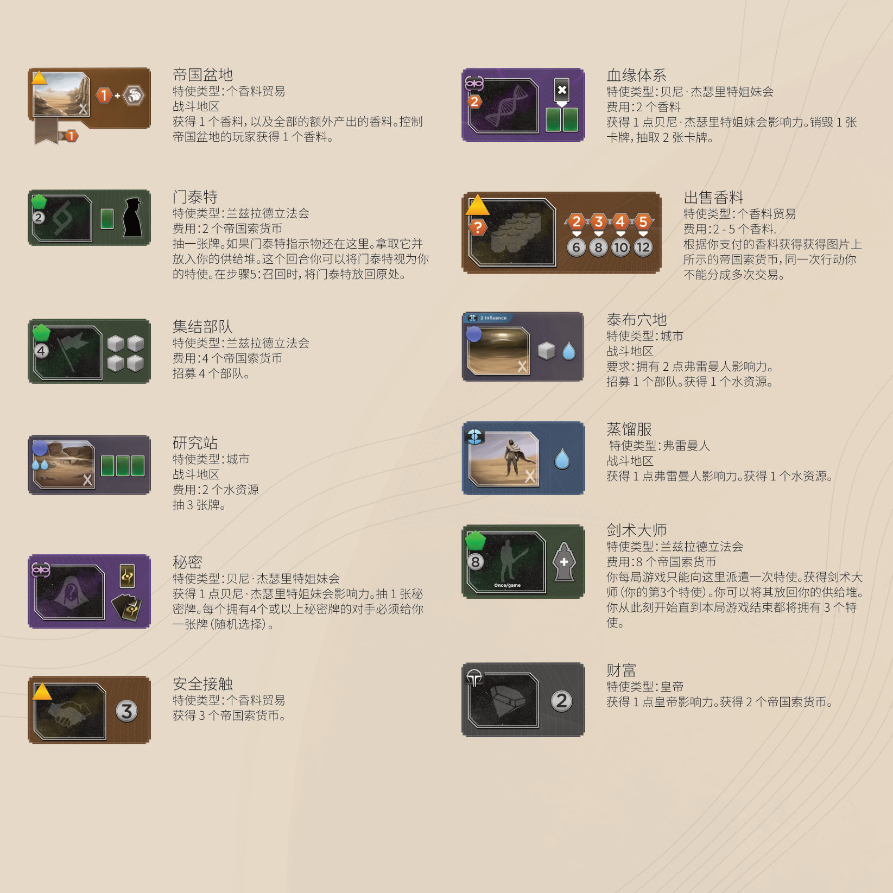